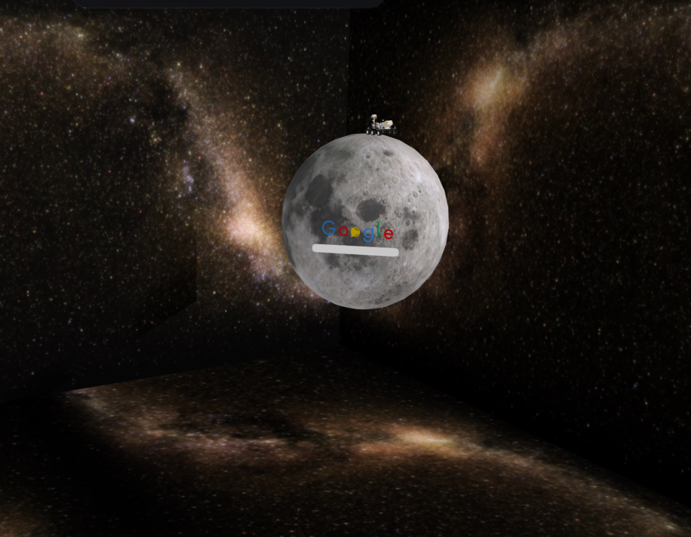

Google doodle
Design Statement
The Canadian Space Rover represents the theme of journey and achievement. These themes are represented by the process of roaming around, collecting letters and opening the door. This journey is made to metaphorically represent the journey and goals of the Canadian lunar rover. This theme is brought to life through my Google Doodle by using a space background, the moon, a rover, google letters, and a door that opens to new knowledge/learnings. These visual choices signify exploration, progression, and opportunity, using analogy, symbolism, and allegory.
The user of the Google Doodle will go through the process of exploration as they will use the rover to ‘explore’ the moon to collect the various letters. Just as the Canadian Lunar Rover will examine the Moon’s south pole, gathering data. The door feature within the Google Doodle symbolizes progress, opportunity, and knowledge. This is just like the Canadian rover. This is a huge historical impact on Canada and once this is launched it will open many more doors for Canadian led space initiatives.
Key Features
- Interactive Exploration – users control the rover to navigate the moon’s surface.
- Letter Collection Mechanic – gathering Google’s letters mirrors the rover’s data collection mission.
- Symbolic Door Element – opening the door represents opportunity, discovery, and new knowledge.
- Thematic Visuals – space background, lunar surface, rover, and Google letters reinforce the theme of exploration.
- Metaphorical Storytelling – analogy, symbolism, and allegory used to link user interaction with the Canadian Lunar Rover’s real mission.
- National Significance – celebrates a historic milestone in Canadian space exploration.